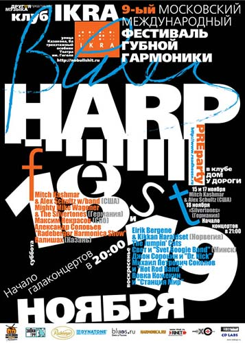
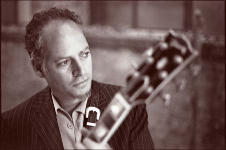
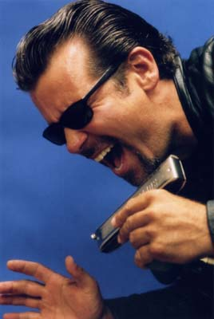
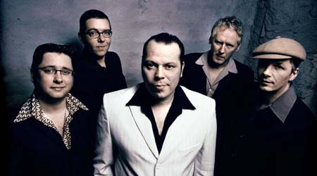
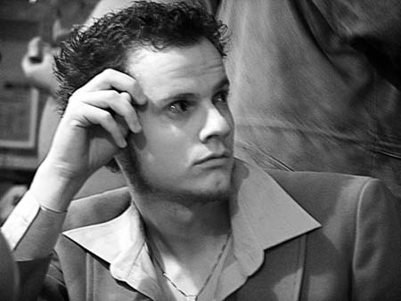

ИКРА - ул. Казакова, 8а (здание театра им. Гоголя), тел. 505-5351. м.Курская, схема проезда.
Дом у Дороги - клубные концерты
фестиваля 15-18 ноября - ул.Доватора, 8, м. Спортивная, тел. 245-5543,
схема проезда.

Гитарист Алекс Шульц (Alex Schultz) родился в 1954 году на Манхэттене в обеспеченной семье и рос в нетипичных для блюзмена условиях. Его мама стремительно приобретала международную известность модельера, а приемный отец был большим поклонником джаза. В 10 лет Алекс уже играл на гитаре и слушал современную музыку, от которой также балдели его молодые родители. К концу шестидесятых, когда разнообразнейшей музыки в Нью-Йорке было с избытком, Алекс имеет возможность слушать все. Знакомство с блюзом произошло, когда он услышал игру Пола Баттерфилда (Paul Butterfield) и Майкла Блумфилда (Michael Bloomfield), открыл для себя Bluesbreakers с Эриком Клэптоном и попал под сильное влияние "B.B. King Live at the Regal". Он пять раз посещал выступления Джимми Хендрикса, впечатляясь его необузданными импровизациями. Отец Алекса играл ведущую роль в его музыкальном образовании. «Он был хитер. Он поощрял все мои музыкальные пристрастия, но чуть позже чрезвычайно своевременно стал подпитывать меня Джанго Райнхардтом, Чарли Крисчэном и Уэсом Монтгомери», говорит Шульц. Алекс быстро прогрессировал в игре на гитаре, а его интерес к джазу становился все сильней. Однажды после посещения концерта Хендрикса, когда Алексу было 13 лет, его отец указал на сходство музыки Хендрикса с джазом. «Когда мы уходили с концерта, он сказал: «Джимми замечательный джазовый музыкант!». Я говорю «Ты о чем?! Он же не играет джаз!». А он ответил «Ну, это же была импровизация. Он «импровизировал над структурами».Шульц постепенно оттачивал свою гитарную игру. «Подростком я постоянно участвовал в джемах и играл все лучше. Я знал, что продвигаюсь вперед, но у меня возник стойкий интерес к джазу». В средине семидесятых он был зачислен в музыкальную школу Беркли в Бостоне. Регулярно возвращаясь в Нью-Йорк на выходные и играя в разных поп и рок группах, Шульц вскоре осознал, что в мире есть «миллион гитаристов», и поэтому переключился на бас гитару. Этот ход привел его к неожиданному решению переехать в Лос-Анджелес в 1979, где Шульц стал участвовать в разных проектах в качестве приглашенного басиста. «Моя игра не была ослепительной, но неожиданно меня стали приглашать, потому что я играл просто, надежно и с хорошим чувством». Он стал выступать с Хэнком Баллардом (Hank Ballard), Коко Монтойя (Coco Montoya) и Уильямом Кларком (William Clarke). Всякий раз привычка играть на гитаре в перерывах в результате приводила его на место гитариста. Любопытно, что его игра на бас-гитаре сохраняла простоту, в то время как игра на гитаре становилась более импровизационной. И хотя любовь Алекса к блюзу и джазу прослеживается в любой из его инструментальных пьес, похоже, что он способен сдерживаться, не переигрывать, и, руководствуясь сверхъестественным чутьем, играть только то, что строго необходимо.
Играя с Уильямом Кларком, сначала на басу, а затем на гитаре, Шульц обрел родственную музыкальную душу. «Наше музыкальное общение было совершенно естественным. Ему нравилось, как я играю, а я понимал, что делал он. Для меня это очень много значило. У нас был схожий подход к музыке». Работая с Кларком, Алекс объездил все западное побережье, записал с ним четыре альбома, в том числе - "Blowin' Like Hell", удостоенный премии W.C. Handy.
После уход из группы Уильяма Кларка Алекс занял место гитариста в сверх-популярной группе Рода Пьяццы (Rod Piazza and the Mighty Flyers), место, которое раньше занимал его учитель - Джуниор Ватсон (Junior Watson). По окончании работы с Флаерсами Шульц стал выступать с Лестером Батлером (Lester Butler) вплоть до смерти Батлера в 1998.
После Шульц стал заниматься различными независимыми проектами в США и Европе,
уже не подписывая ни с кем постоянного контракта. В качестве сессионного
гитариста он записался на 40 альбомах ведущих музыкантов современного блюза.
Поле его музыкальных интересов простирается от блюза до джаза. Так его
европейская пластинка
Важным этапом в музыкальной карьере Алекса стал выход именного диска «Think About It», сделавшего широко известным имя гитариста, который во многом определял звучание популярных ансамблей Рода Пьяццы, Уильяма Кларка, Лестера Баттлера.
Стиль Алекса Шульца уникален тем, что ему удалось сплавить блюз и усложненные джазовые элементы, не утеряв силы блюзовых выразительных средств. Его считают самым блюзовым из гитаристов-лидеров современного вест-коуст блюза, работающих на границе жанров, во многом благодаря лаконичности, драйву и красоте звучания его гитары.

Гармонист и вокалист Митч Кэшмар (Mitch Kashmar) родился в Санта-Барбаре, Калифорния в 1960 году. Уже в 20 лет он сколотил свою собственную группу The Pontiax, которая стала известна по всей Калифорнии в очень короткий срок. После этого Митч с друзьями принимает решение перебраться в Лос-Анджелес, продолжив музыкальную карьеру. Альбом "100 Miles To Go" получил общенациональную известность, благодаря чему The Pontiax отправились с фестивальными турами по всей Америке, Канаде, в Европу и даже - в Австралию и Новую Зеландию. Группа значительно расширила диапазон стилей в своем репертуаре, исполняя чикагский блюз с губной гармоникой, нью-орлеанский фортепианный ритм-н-блюз, вест-коаст-джамп блюз и свинг, буги-вуги, луизианский свомп-фанк, техасский гитарный блюз и мейнстрим-джаз. Также группа была очень востребована как аккомпанирующая блюзовым звездам. За время своего существования они играли с Big Joe Turner, Eddie Cleanhead Vinson, Lowell Fulson, Roy Gaines, Jimmy Witherspoon, Charlie Musselwhite, Johnny Adams, John Lee Hooker, Pee Wee Crayton, Luther Tucker, Pinetop Perkins, William Clarke, Kim Wilson....После распада The Pontiax Митч Кэшмар выступал как вольнонаемный блюзмен и солист, участвуя во многих проектах калифорнийского блюза. Но оставался при этом какое-то время в тени его приятелей, волей случая ставших более известными за пределами Калифорнии. Исправила положение его сольная пластинка Nickels & Dimes, которая вышла в конце 2004 года и получила признание по всей стране. На пластинке с Митчем записались замечательные музыканты. Это - Джуниор Уотсон на гитаре, Боб Уэлш на пианино, лучшая ритм-секция современного вест-коаст блюза - Ронни Джеймс на басу, Ричард Иннес на барабанах и другие.
Новый диск "Wake Up & Worry" выходит на Delta Groove в конце октября 2006 г., состав музыкантов на нем превзошел по звездности предыдущий релиз - Джуниор Уотсон, Расти Зинн, Джон Маркс, Фред Каплан, Алаистер Грин, Рик Рид, Ричард Иннес.
Митч Кэшмар - многоплановый мастер губной гармоники, владеющий ей как в драйвовой электрической усиленной форме, так и с лирическим акустическим звуком. О его гармонике восторженно говорили Ким Вилсон, Вильям Кларк, Джеймс Харман, Джон Хэммонд, Джуниор Уотсон. Отдельно стоит отметить стиль игры Митча на хроматической гармонике. Митч был большим другом Вильяма Кларка, современного гуру хроматики, вместе они много играли, чему-то учились, развивались и, разумеется, влияли друг на друга. Вокал Митча Кэшмара показывает его как великолепного блюзового стилиста, подчеркивающего все нюансы блюзовой песни, чему можно было научиться, только имея столь богатый блюзовый опыт.
Билл Трояни (Bill Troiani) - опытный блюзовый бас-гитарист из Нью-Йорка, игравший долгие годы в группах у известных музыкантов - Эдди Киркланда, Попа Чабби, Тома Рассела. Последние несколько лет он живет в Осло и играет в множестве различных составов с талантливыми молодыми норвежскими блюзменами.
Александр Петтерсен (Alexander Pettersen) - молодой барабанщик, которому чуть больше 20 лет, начал играть блюз на ударных с 12 лет. Довольно скоро он стал регулярно выступать в клубе Muddy Waters в Осло, став позже постоянным членом хаус-бенда. На практике это означало возможность переиграть в том числе с огромным количеством американских блюзовых звезд, посещающих Норвегию, как и участие в 4-5 норвежских блюзовых составах. В свои молодые годы Алекс уже является великолепным опытным блюзовым баранщиком, не переставая учиться.
15.11.06, СР, Москва, Дом у Дороги, 21:00
17.11.06, ПТ, Москва, Дом у Дороги, 21:00
18.11.06, СБ, Москва, ИКРА, - галаконцерт Harp Fest, 20:00
19.11.06, ВС, Владимир, Primus, November Blues Fest, 18:00

Группа из Кельна "The Silvertones" - без сомнения один из самых интересных немецких блюзбендов на сегодняшний день. Их отличает аутентичность и мощная энергетика, а также оригинальный саунд, базирущийсяся на ряде традиционных стилей электрического блюза. Если вы ищите группу с харизматичным певцом, трепетной и взрывной гармоникой, проникновенной гитарой и ритм-секцией, качающей как сердце чикагца, то "The Silvertones" - безусловно ваш бенд!"The Silvertones" образовались в 1996 году. С тех пор, фронтмен коллектива Mighty Mike Wagener снискал устойчивую репутацию настоящего блюзового шаутера и виртуозного испонителя на губной гармонике. Кроме него, в группе два гитариста. Первый, T-Man, крепкий профессионал известен в Европе еще со времен участия в джамп-блюзовом составе "Little Roger & The Houserockers". Про второго гитариста говорят, что это самый "черный" из белых блюзменов Германии. Helmut Wirtz выделяется тем, что его звук и фразировка очень напоминает великих чикагских гитаристов Вест Сайда. Хранитель грува в коллективе - изобретательный басист Andreas Meyer. За барабанами - ветеран немецкой блюзовой сцены Peter Behne, основатель в свое время достаточно успешной ритм-н-блюзовой группы "Boogie Radio".
"The Silvertones" много концертируют по Европе. Они регулярно бывают с турами в Бельгии, Голландии, Дании, Швейцарии.. И везде они остаются верны своей фишке: характерному, динамичному звучанию, в котором общий саунд бэнда гораздо важнее соло. И еще, все, что делает группа - очень искренне. Они просто любят, то, что делают. Это передается публике, и та отвечает им такой же теплотой.
Новый альбом коллектива под названием "Foolin' Around" продюсирует легендарный бельгиец Marc T. И треки звучат о-о-очень многообещающе! Выход диска намечен на ноябрь 2006 года, так что в Москве фактически состоится его презентация.
Итак, "The Sivertones" - традиционный блюз из Германии с чувством и толком. Приходите на вечеринку и будет вам счастье!
18.11.06, СБ, Москва, ИКРА, - галаконцерт Harp Fest, 20:00
18.11.06, СБ, Москва, Дом у Дороги, 22:00
19.11.06, СР, Владимир, Primus, November Blues Fest, 18:00

В последние несколько лет норвежская блюзовая сцена поистине расцвела. Яркий ее представитель - 23-х летний асс губной гармоники Эйрик Бергене (Eirik Bergene) играет чуть более 5 лет, но услышав его гармонику, трудно не назвать ее потрясающей. Эйрик начал с успешной футбольной карьеры, благодаря чему стал очень много ездить по стране. Впервые взяв гармонику в руки в канун рождества 2000 года, он сразу решил с ней больше не расставаться. Продолжая играть в футбол, он не переставал заниматься гармоникой, мечтая занять заслуженное место рядом с такими норвежскими мастерами, как Arne Fjeld Rasmussen, Richard Gjems и Eirek Sandnes. Несмотря на то, что вступил в игру не так давно, он влетел в высшую лигу гармонистов со скоростью ракеты. Уже через три года уйдя из большого спорта, Эйрик полностью переключился на занятия музыкой, став профессиональным музыкантом.За несколько лет Эйрик сыграл бесчисленное число концертов, как у себя на родине в Норвегии и в других скандинавских странах, так и в США, Италии, Дании, в Восточной Европе, и уже несколько раз был в России. Нашим случателям ярко запомнились его гастроли в группе с норвежским звездным гитаристом Видаром Бюском и в составе шоу Blues Harp Melt Down. В Норвегии Эйрик получил несколько престижных премий и грантов в качестве молодого дарования.
Эйрик - большой поклонник старых мастеров Little Walter, Walter Horton, James Cotton и George "Harmonica" Smith, но также он черпает вдохновение у относительно современных гармонистов William Clarke, Kim Wilson, Mark Ford, Paul DeLay и Carlos Del Junco. Это разнообразие музыкальных влияний дало ему солидную базу по части правильного звука и техники, что дает мощный толчок, который запустит его в музыкальное будущее.
В молодые годы Эйрик уже развил в себе мощный блюзовый голос, 4 года она выступает как солист собственной группы Eirik Bergene Band. И что не очень типично для его возраста, Эйрика заряжает сырой энергией традиционная старая блюзовая музыка, драйв, который заводил исполнявших ее классиков. И они для Эйрика - любимые музыканты, а не требующие почтения музейные экспонаты. Музыкальные вкусы Эйрика достаточно эклектичны - он без застенчивости перемешивает блюз, ритм-н-блюз и соул-музыку в достаточно современных аранжировках. Все это делает его концерты очень эмоциональными, свежими для восприятия, и разнообразными по стилю и звучанию.
19.11.06, ВС, ИКРА, - галаконцерт Harp Fest, with Kikkan Haraldset (Норвегия) - гитара, 20:00
22.11.06, СР, Дом у Дороги, 21:00
24.11.06, ПТ, B.B. King, 20:30
25.11.06, СБ, FM-Club, 22:00
Концерты пройдут совместно с группой The Jumpin' Cats.
{kind=link}